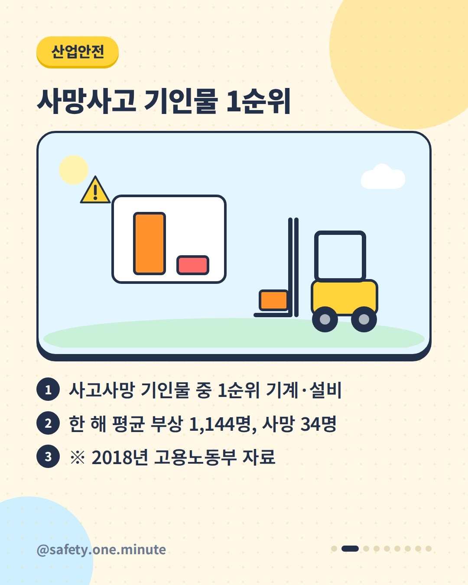
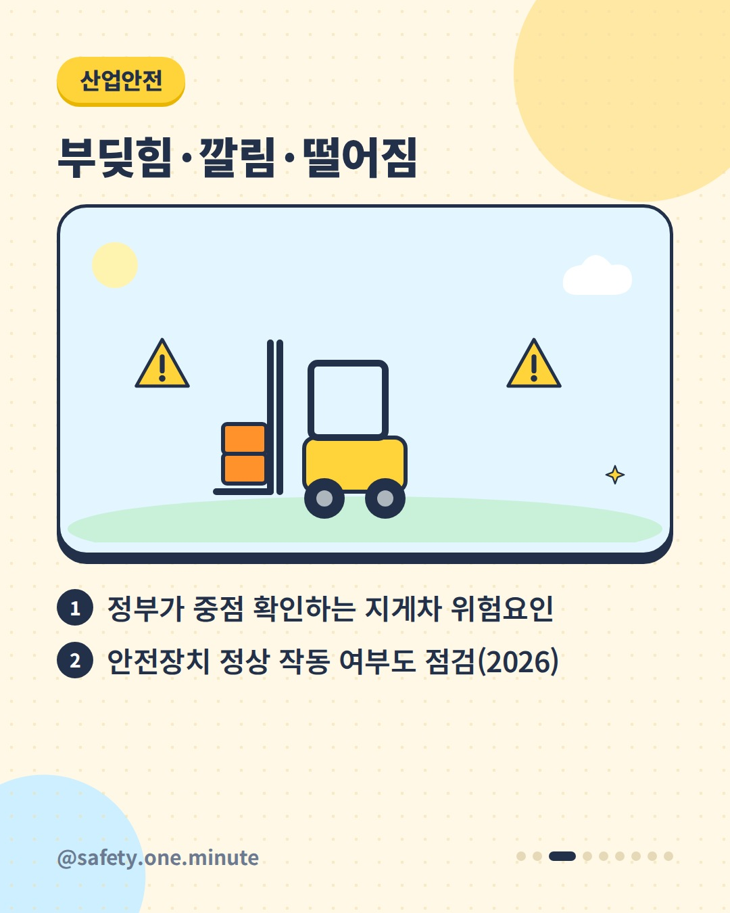
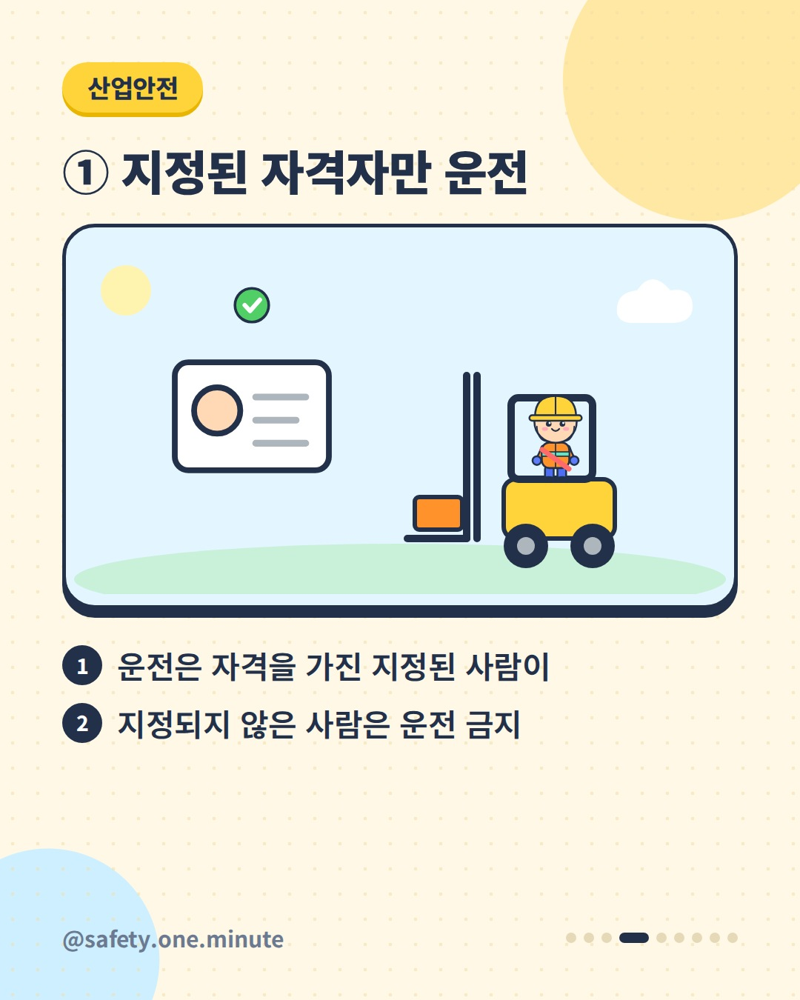
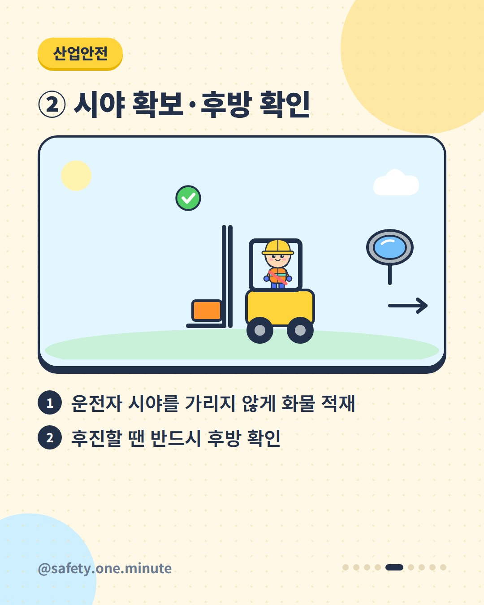
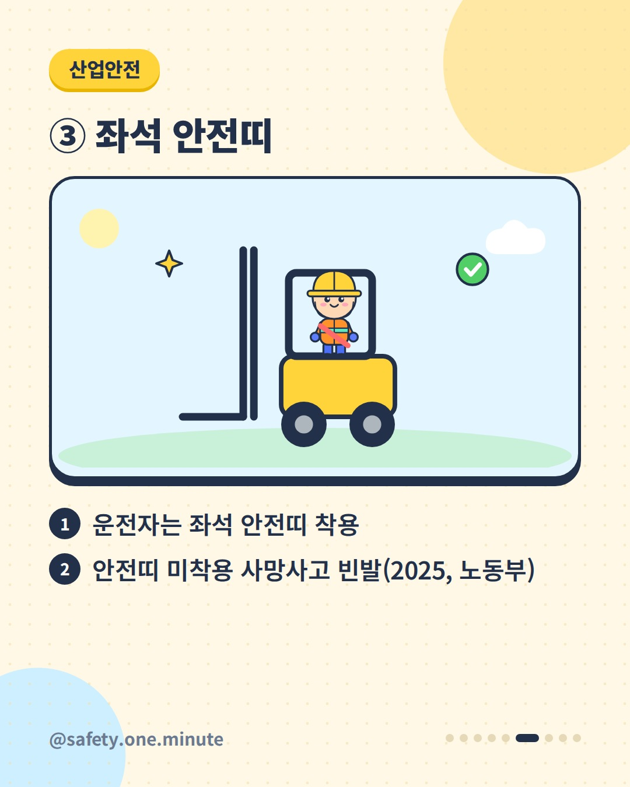
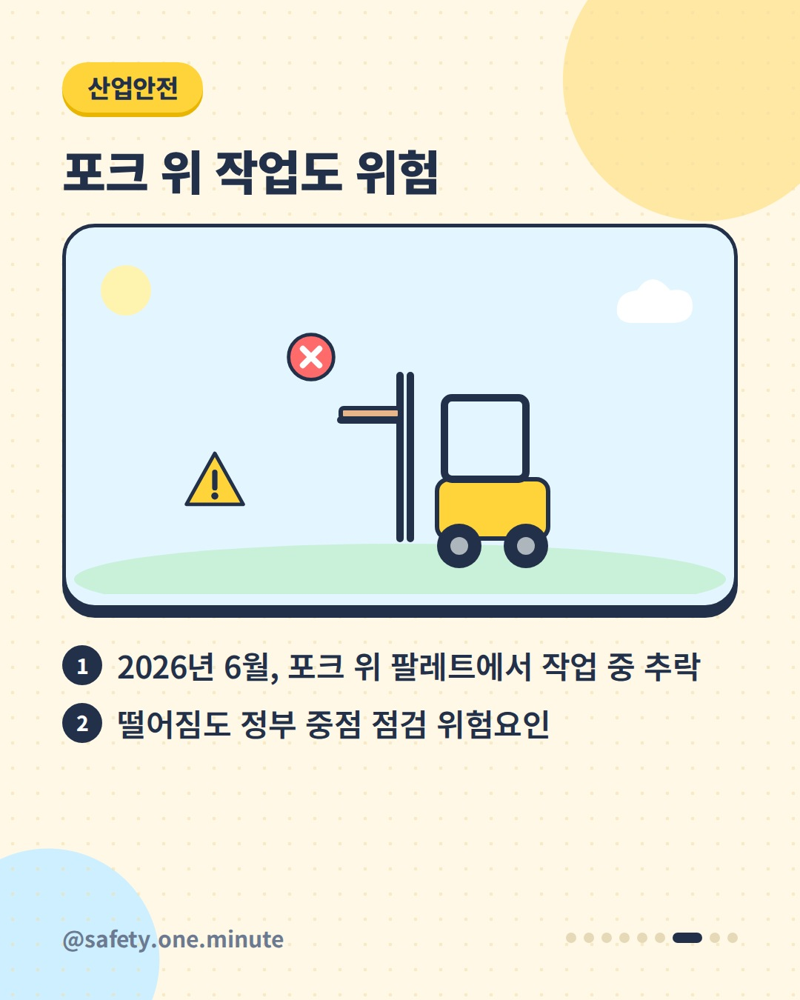
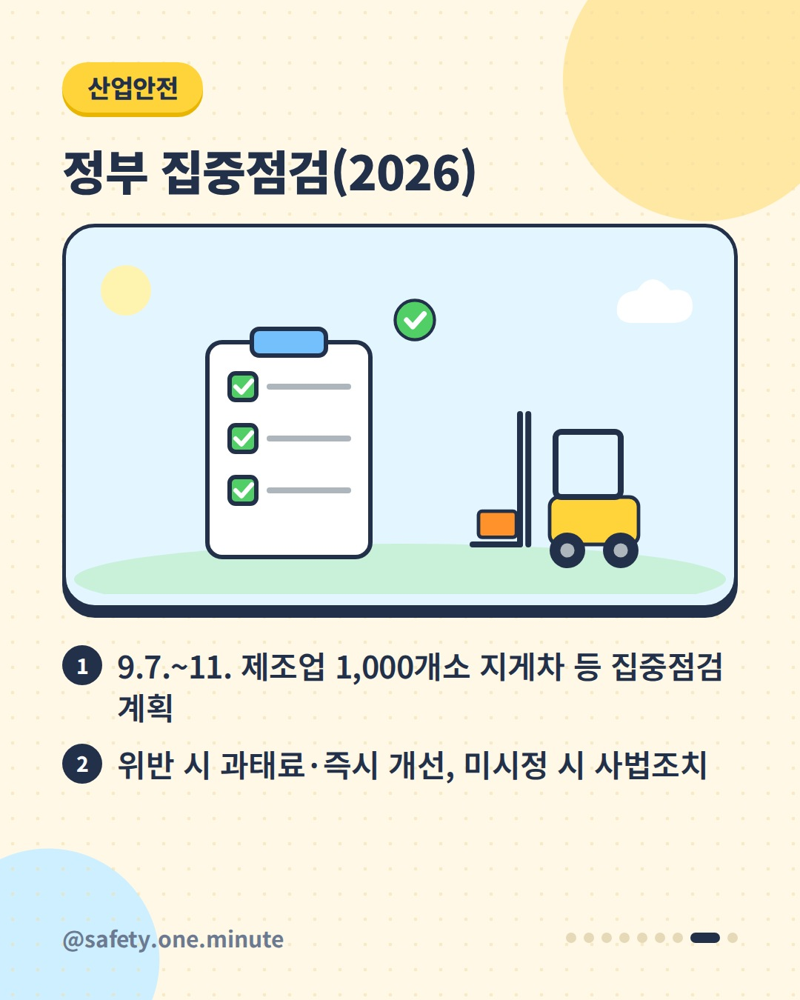
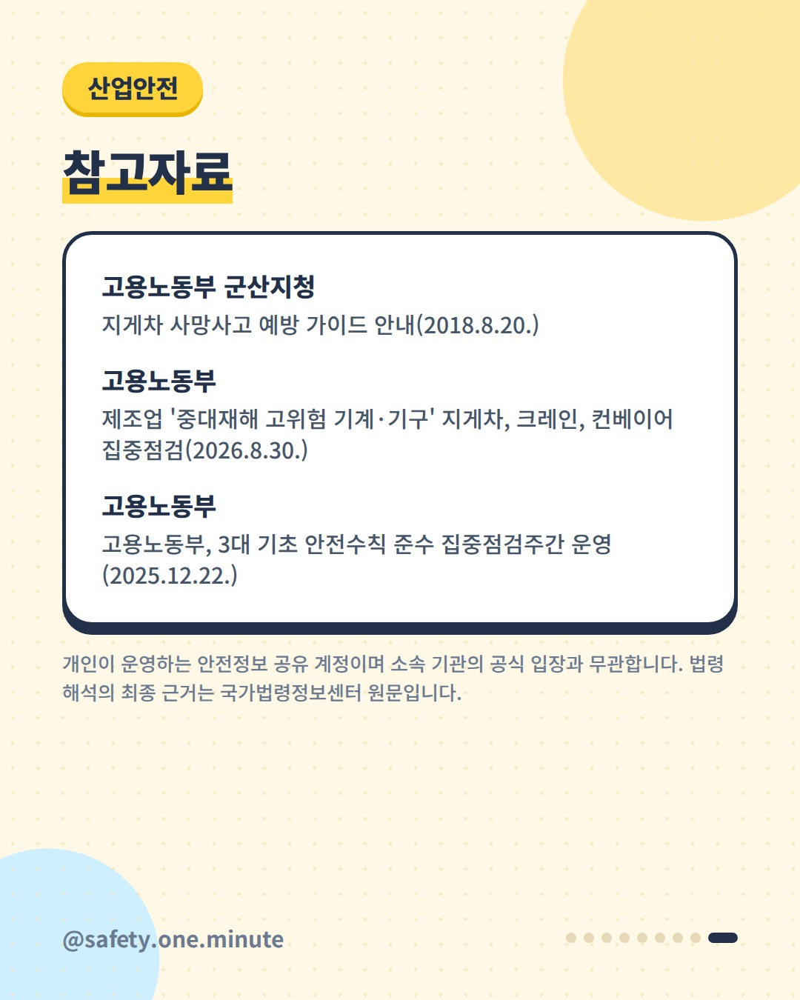

지게차, 이 3가지만 — 9장 (4:5)








캡션
창고·공장에서 매일 보는 지게차, 이 3가지만 지켜도 다릅니다. 고용노동부 자료(2018)에 따르면 지게차는 사고사망 기인물 1순위 기계·설비로, 한 해 평균 1,144명이 다치고 34명이 숨졌습니다. 지게차 사망사고 예방 3원칙 ① 운전은 자격을 가진 지정된 사람만 ② 시야를 가리지 않게 화물을 싣고, 후진할 땐 반드시 후방 확인 ③ 운전자는 좌석 안전띠 착용 고용노동부는 2026년 9월 7~11일 지게차·크레인·컨베이어를 쓰는 제조업 1,000개소를 집중점검(불시점검 포함)한다고 밝히고, 부딪힘·깔림·떨어짐 위험과 안전장치 작동 여부를 중점 확인 대상으로 꼽았습니다. 2025년 12월에는 안전모·안전대·안전띠 미착용 사망사고가 잦다며 '3대 기초 안전수칙' 집중점검도 실시했습니다. ※ 통계는 2018년 자료입니다. 법령상 세부 기준은 국가법령정보센터에서 관련 법령 원문을 확인하세요. 출처: - 고용노동부 군산지청 – 지게차 사망사고 예방 가이드(2018) - 고용노동부 – 제조업 고위험 기계·기구 집중점검(2026) - 고용노동부 – 3대 기초 안전수칙 집중점검주간(2025) 개인이 운영하는 안전정보 공유 계정이며 소속 기관의 공식 입장과 무관합니다. 법령 해석의 최종 근거는 국가법령정보센터 원문입니다. #지게차 #지게차안전 #산업안전 #물류안전 #안전수칙 #좌석안전띠